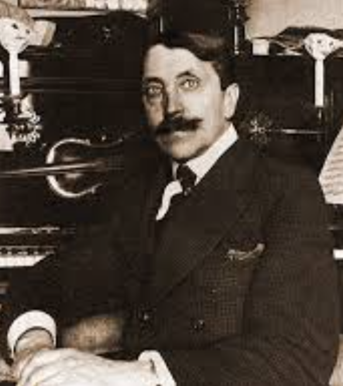

про музей

михаил матюшин

В 1912—1923 годах в квартире 12 жил
выдающийся деятель русского авангарда
— живописец, скрипач и композитор Михаил
Матюшин (1861—1934) с супругой Еленой Гуро
(1877—1913).
В 1910—1920-е годы дом стал своеобразной
штаб-квартирой русских футуристов. Здесь
часто бывали К. Малевич, П. Филонов, коллеги
Матюшина по ГИНХУК братья и сёстры Эндер,
Валида Делакроа, Николай Костров, Евгения
Магарил, литераторы Максим Горький
и Алексей Крученых, жили и работали
В. Маяковский и В. Хлебников.
выдающийся деятель русского авангарда
— живописец, скрипач и композитор Михаил
Матюшин (1861—1934) с супругой Еленой Гуро
(1877—1913).
В 1910—1920-е годы дом стал своеобразной
штаб-квартирой русских футуристов. Здесь
часто бывали К. Малевич, П. Филонов, коллеги
Матюшина по ГИНХУК братья и сёстры Эндер,
Валида Делакроа, Николай Костров, Евгения
Магарил, литераторы Максим Горький
и Алексей Крученых, жили и работали
В. Маяковский и В. Хлебников.